Listes des définitions et théorèmes¶
Corollaires¶
Corollaire C1 : Estimateur de l’aire sous la courbe ROC
On dispose des scores des expériences qui ont réussi
et  les scores des expériences qui ont échoué.
On suppose également que tous les scores sont indépendants.
Les scores
les scores des expériences qui ont échoué.
On suppose également que tous les scores sont indépendants.
Les scores  sont identiquement distribués,
il en est de même pour les scores
sont identiquement distribués,
il en est de même pour les scores  .
Un estimateur de l’aire
.
Un estimateur de l’aire  sous la courbe ROC” est :
sous la courbe ROC” est :
(1)¶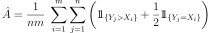
Corollaire C1 : approximation d’une fonction créneau
Soit 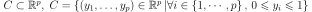, alors :
![\begin{array}{l}
\forall \varepsilon > 0, \; \forall \alpha>0, \; \exists n \in \N^*, \;
\exists \vecteur{x_1}{x_n}
\in\left( \mathbb{R}^p\right) ^{n}, \; \exists
\vecteur{\gamma_1}{\gamma_n} \in \mathbb{R}^n \text{ tels que } \forall x\in \mathbb{R}^p, \\ \\
\begin{array}{ll}
& \left| \underset{i=1}{\overset{n}{\sum}}\dfrac{\gamma_i}
{1+e^{\left\langle x_{i},x\right\rangle +b_{i}}}-\indicatrice{x\in C
}\right| \leqslant1 \\ \\
\text{ et } & \underset{y\in Fr\left( C\right) }{\inf }\left\| x-y\right\| >
\alpha\mathbb{R}ightarrow\left| \underset{i=1}{\overset
{n}{\sum}}\dfrac{\gamma_i}{1+e^{\left\langle x_{i},x\right\rangle +b_{i}}}
-\indicatrice{x\in C}\right| \leqslant\varepsilon
\end{array}
\end{array}](_images/math/a763c7a26bb57800c540139f586f0783c8ee7c8e.svg)
Corollaire C1 : nullité d’un coefficient
Les notations utilisées sont celles du théorème sur loi asymptotique des coefficients.
Soit  un poids du réseau de neurones
d’indice quelconque
un poids du réseau de neurones
d’indice quelconque  . Sa valeur estimée est
. Sa valeur estimée est  ,
sa valeur optimale 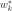. D’après le théorème :
,
sa valeur optimale 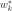. D’après le théorème :

Corollaire C2 : Variance de l’estimateur AUC
On note  et 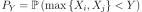.
et 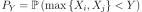.
 et
et  sont de même loi que
sont de même loi que  ,
,  , 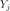 sont de même loi que
, 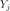 sont de même loi que  .
La variance de l’estimateur
.
La variance de l’estimateur  définie par (1) est :
définie par (1) est :

Corollaire C2 : approximation d’une fonction indicatrice
Soit  compact, alors :
compact, alors :
![\begin{array}{c}
\forall\varepsilon>0, \; \forall\alpha>0, \; \exists\left( x_{1},...,x_{n}\right)
\in\left( \mathbb{R}^{p}\right)^{n}, \; \exists\left(
b_{1},...,b_{n}\right) \in\mathbb{R}^n \text{ tels que } \forall x\in\mathbb{R}^{p},\\ \\
\begin{array}{ll}
& \left| \sum_{i=1}^n \dfrac{\gamma_i}
{1+e^{\left\langle x_{i},x\right\rangle +b_{i}}}-\indicatrice{x\in C
}\right| \leqslant1+2\varepsilon^2\\ \\
\text{ et } & \underset{y\in Fr\left( C\right) }{\inf}\left\| x-y\right\|
>\alpha\mathbb{R}ightarrow\left| \sum_{i=1}^n
\dfrac{\gamma_i}{1+e^{\left\langle x_{i} ,x\right\rangle +b_{i}}}-
\indicatrice{x\in C}\right| \leqslant \varepsilon
\end{array}
\end{array}](_images/math/543387b89f76f624b61d30d98627e306d64b8385.svg)
Corollaire C3 : famille libre de fonctions
Soit  l’ensemble des fonctions continues de
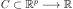 avec
l’ensemble des fonctions continues de
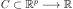 avec  compact muni de la norme :
compact muni de la norme :
 Alors l’ensemble des fonctions sigmoïdes :
Alors l’ensemble des fonctions sigmoïdes :
est une base de .
Définitions¶
Définition D1 : B+ tree
Soit un B+ tree, soit  un noeud de ,
il contient un vecteur
avec et .
Ce noeud contient aussi exactement noeuds fils
notés . On désigne par
l’ensemble des descendants du noeud et
.
Le noeud vérifie :
un noeud de ,
il contient un vecteur
avec et .
Ce noeud contient aussi exactement noeuds fils
notés . On désigne par
l’ensemble des descendants du noeud et
.
Le noeud vérifie :
Définition D1 : Courbe ROC
On suppose que est la variable aléatoire des scores
des expériences qui ont réussi.
est celle des scores des expériences qui ont échoué.
On suppose également que tous les scores sont indépendants.
On note et 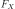 les fonctions de répartition de ces variables.
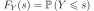 et  .
On définit en fonction d’un seuil
.
On définit en fonction d’un seuil  :
:
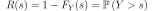
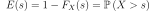
La courbe ROC est le graphe 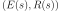 lorsque  varie dans
varie dans  .
.
Définition D1 : Dynamic Minimum Keystroke
On définit la façon optimale de saisir une requête sachant
un système de complétion  comme étant le
minimum obtenu :
comme étant le
minimum obtenu :
(1)¶![\begin{eqnarray*}
M'(q, S) &=& \min_{0 \leqslant k < l(q)} \acc{ M'(q[1..k], S) +
\min( K(q, k, S), l(q) - k) }
\end{eqnarray*}](_images/math/9c69c3ee6be2f50d6e58a57fbe787adcbd5da467.svg)
Définition D1 : Dynamic Minimum Keystroke arrière
On définit la façon optimale de saisir une requête
sachant un système de complétion
comme étant le minimum obtenu :
(1)¶
Définition D1 : Minimum Keystroke
On définit la façon optimale de saisir une requête sachant un système de complétion
comme étant le minimum obtenu :
(1)¶
La quantité  représente le nombre de touche vers le bas qu’il faut taper pour
obtenir la chaîne
représente le nombre de touche vers le bas qu’il faut taper pour
obtenir la chaîne  avec le système de complétion et les
premières lettres de .
avec le système de complétion et les
premières lettres de .
Définition D1 : Régression quantile
On dispose d’un ensemble de n couples
 avec 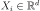
et 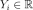. La régression quantile
consiste à trouver 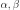 tels que la
somme 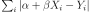
est minimale.
avec 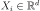
et 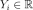. La régression quantile
consiste à trouver 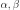 tels que la
somme 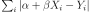
est minimale.
Définition D1 : bruit blanc
Une suite de variables aléatoires réelles
 est un bruit blanc :
est un bruit blanc :
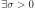,
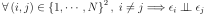
Définition D1 : loi de Poisson et loi exponentielle
Si une variable suit une loi de Poisson de
paramète 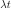, elle a pour densité :

Si une variable suit une loi exponentielle de paramètre 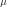, elle a pour densité :

Définition D1 : mot
On note l’espace des caractères ou des symboles. Un mot ou une séquence est
une suite finie de . On note
 l’espace des mots formés
de caractères appartenant à .
l’espace des mots formés
de caractères appartenant à .
Définition D1 : mélange de lois normales
Soit une variable aléatoire d’un espace vectoriel de dimension  ,
suit un la loi d’un mélange de lois gaussiennes de paramètres
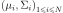,
alors la densité
,
suit un la loi d’un mélange de lois gaussiennes de paramètres
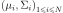,
alors la densité  de est de la forme :
de est de la forme :

Avec :  .
.
Définition D1 : neurone
Un neurone à  entrées est une fonction
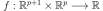
définie par :
entrées est une fonction
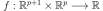
définie par :

 ,
, 
 avec
avec 
Définition D1 : neurone distance
Un neurone distance à entrées est une fonction
définie par :
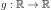
- ,

 avec
avec
Définition D1 : orthonormalisation de Schmidt
L’orthonormalisation de Shmidt :
Soit  une base de
une base de 
On définit la famille par :

Définition D2 : Dynamic Minimum Keystroke modifié
On définit la façon optimale de saisir une requête sachant
un système de complétion comme étant le
minimum obtenu :
(2)¶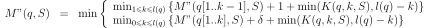
Définition D2 : Régression quantile
On dispose d’un ensemble de n couples
avec
et . La régression quantile
consiste à trouver tels que la
somme  est minimale.
est minimale.
Définition D2 : couche de neurones
Soit et  deux entiers naturels,
on note
avec .
Une couche de neurones et entrées est une fonction :
deux entiers naturels,
on note
avec .
Une couche de neurones et entrées est une fonction :

vérfifiant :
est un neurone.

Définition D2 : distance d’édition
La distance d’édition sur  est définie par :
est définie par :
Définition D2 : neurone distance pondérée
Pour un vecteur donné 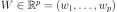,
on note  .
Un neurone distance pondérée à entrées est une fonction
.
Un neurone distance pondérée à entrées est une fonction
 définie par :
définie par :
 ,
, 
 avec
avec
Définition D2 : taux de classification à erreur fixe
On cherche un taux de reconnaissance pour un taux d’erreur donné.
On dispose pour cela d’une courbe ROC obtenue par
l’algorithme de la courbe ROC et définie par les points
 .
On suppose ici que
.
On suppose ici que  et
et  .
Si ce n’est pas le cas, on
ajoute ces valeurs à l’ensemble .
.
Si ce n’est pas le cas, on
ajoute ces valeurs à l’ensemble .
Pour un taux d’erreur donné  , on cherche
, on cherche  tel que :
tel que :

Le taux de reconnaissance 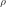 cherché est donné par :

Définition D3 : distance entre caractères
Soit
l’ensemble des caractères ajouté au caractère vide ..
On note  la fonction coût définie comme suit :
la fonction coût définie comme suit :
(1)¶
On note
l’ensemble des suites finies de  .
.
Définition D3 : réseau de neurones multi-couches ou perceptron
Un réseau de neurones multi-couches à sorties,
entrées et couches est une liste de couches
 connectées les unes aux autres de telle sorte que :
connectées les unes aux autres de telle sorte que :
 ,
chaque couche
,
chaque couche  possède
possède  neurones et 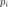 entrées
neurones et 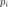 entrées ,
de plus et
,
de plus et 
Les coefficients de la couche sont notés
, cette couche définit une fonction
 .
Soit la suite
.
Soit la suite  définie par :
définie par :
On pose  ,
le réseau de neurones ainsi défini est une fonction
,
le réseau de neurones ainsi défini est une fonction  telle que :
telle que :
Définition D4 : mot acceptable
Soit un mot tel qu’il est défini précédemment.
Soit  une suite infinie de caractères, on dit que
une suite infinie de caractères, on dit que
 est un mot acceptable pour
est un mot acceptable pour  si et seulement si la sous-suite
extraite de contenant tous les caractères différents de
si et seulement si la sous-suite
extraite de contenant tous les caractères différents de  est égal au mot . On note
l’ensemble des mots acceptables pour le mot .
est égal au mot . On note
l’ensemble des mots acceptables pour le mot .

Définition D6 : distance d’édition étendue
Soit d^* la distance d’édition définie en 2
pour laquelle les coûts de comparaison, d’insertion et de suppression
sont tous égaux à 1.
La distance d’édition sur est définie par :
(6)¶
Définition D7 : distance d’édition tronquée
Soient deux mots , on définit la suite :

Par :
Définition D8 : distance d’édition tronquée étendue
Soit deux mots , on définit la suite :
par :
Lemmes¶
Lemme L1 : Dynamic Minimum Keystroke
On note 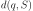 la longueur du plus long préfixe de inclus dans .
(1)¶![\begin{eqnarray*}
M'(q, S) &=& \min_{d(q, S) \leqslant k < l(q)} \acc{ M'(q[1..k], S) + \min( K(q, k, S), l(q) - k) }
\end{eqnarray*}](_images/math/50b4a7cbde33f5299a77073bd4838dd4a187bee7.svg)
Lemme L1 : M” et sous-ensemble
On suppose que la complétion est préfixe
pour la requête et
ce qui signifie
que la complétion est toujours affichée
avant la complétion si elles apparaissent ensemble.
Alors 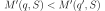.
Plus spécifiquement, si on considère l’ensemble
( est la complétion
sans son préfixe ).

Lemme L1 : Rang k
On note ,
, avec
, 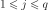,
et avec .
On suppose que les matrices
sont solution du problème d’optimisation
.
On suppose que .
Alors les les matrices et
sont de rang .
Lemme L1 : inertie minimum
Soit ,
 points de
points de  , le minimum de la quantité
, le minimum de la quantité
 :
:

est atteint pour
le barycentre des points  .
.
Lemme L2 : Projection
On note ,
, avec
, ,
et avec .
On suppose que les matrices
sont solution du problème d’optimisation
.
On considère que la matrice est un ensemble de
points dans dans un espace vectoriel de dimension .
La matrice  représente des projections de ces points
dans l’espace vectoriel engendré par les vecteurs colonnes
de la matrice
représente des projections de ces points
dans l’espace vectoriel engendré par les vecteurs colonnes
de la matrice  .
.
Lemme L2 : calcul de *M”(q, S)*
On suppose que est la complétion la plus longue
de l’ensemble qui commence :
La métrique  vérifie la propriété suivante :
vérifie la propriété suivante :

Figures¶
Figure F1 : Gradient conjugué
Gradient et gradient conjugué sur une ligne de niveau de la fonction ,
le gradient est orthogonal aux lignes de niveaux de la fonction  ,
mais cette direction est rarement la bonne à moins que le point
,
mais cette direction est rarement la bonne à moins que le point
 se situe sur un des axes des ellipses,
le gradient conjugué agrège les derniers déplacements et propose une direction
de recherche plus plausible pour le minimum de la fonction.
Voir Conjugate Gradient Method.
se situe sur un des axes des ellipses,
le gradient conjugué agrège les derniers déplacements et propose une direction
de recherche plus plausible pour le minimum de la fonction.
Voir Conjugate Gradient Method.
Figure F1 : Modèle optimal pour la base de test

Figure F1 : Principe de la compression par un réseau diabolo
![\begin{picture}(241,100)(0,-10)
\put(1,1) {\framebox(40,22){\footnotesize \begin{tabular}{c}vecteur \\ $X \in \mathbb{R}^N$ \end{tabular}}}
\put(85,-9) {\framebox(45,32){\footnotesize \begin{tabular}{c}vecteur \\ $Y \in \mathbb{R}^M$ \\ et $M < N$ \end{tabular}}}
\put(200,1) {\framebox(40,22){\footnotesize \begin{tabular}{c}vecteur \\ $Z \approx X$ \end{tabular}}}
\put(20,40) {\framebox(90,45){\footnotesize
\begin{minipage}{30mm} première couche du réseau diabolo~:
\textbf{projection (ou compression)}
\end{minipage}}}
\put(120,40) {\framebox(90,45){\footnotesize
\begin{minipage}{30mm} seconde couche du réseau diabolo~:
\textbf{reconstitution (ou décompression)}
\end{minipage}}}
\put(30,23) {\vector(1,1){17}}
\put(130,23) {\vector(1,1){17}}
\put(90,39) {\vector(1,-1){17}}
\put(190,39) {\vector(1,-1){17}}
\end{picture}](_images/math/f2c9ba5c16f8496610f083aefa98cf57f3b35670.svg)
Figure F1 : Réseau de neurones adéquat pour la classification

Figure F1 : neurone graphique
![\begin{picture}(100,80)(0,0)
\put(10,0) {\circle{20}}
\put(10,25) {\circle{20}}
\put(10,50) {\circle{20}}
\put(10,0) {\makebox(3,3){$x_1$}}
\put(10,25) {\makebox(3,3){$x_i$}}
\put(10,50) {\makebox(3,3){$x_p$}}
\put(80,25) {\circle{35}}
\put(78,25) {\makebox(6,3){$\;y \overset{f}{\rightarrow} z$}}
\put(20,25) {\line(1,0){43}}
\drawline(20,0)(63,25)
\drawline(20,50)(63,25)
\put(30,50) {\makebox(3,3){$w_p$}}
\put(30,18) {\makebox(3,3){$w_i$}}
\put(30,-2) {\makebox(3,3){$w_1$}}
\put(48,20) {\makebox(3,3){$\sum$}}
\put(50,-20) {\circle{20}}
\put(50,-20) {\makebox(3,3){$1$}}
\drawline(50,-10)(63,25)
\put(50,5) {\makebox(3,3){$b$}}
\end{picture}](_images/math/05b2ca10116e9f34ec14eeb334a5f025f6c6b2a2.svg)
Le vecteur  joue le rôle des entrées.
joue le rôle des entrées.
 est appelé parfois le potentiel.
.
est appelé parfois le potentiel.
.
 est appelée la sortie du neurone.
est appelée la fonction de transfert ou de seuil.
est appelée la sortie du neurone.
est appelée la fonction de transfert ou de seuil.
 .
.
Figure F2 : Exemple de minimal locaux
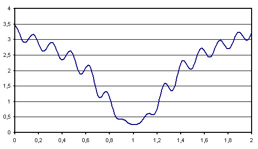Figure F2 : Modèle du perceptron multi-couche (multi-layer perceptron, MLP)

: entrées
- nombre de neurones sur la couche 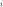,

 sortie du neurone , de la couche
sortie du neurone , de la couche  , par extension,
, par extension, 
 potentiel du neurone de la couche
potentiel du neurone de la couche coefficient associé à l’entrée 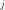 du neurone de la couche
, biais du neurone de la couche
biais du neurone de la couche  fonction de seuil du neurone de la couche
fonction de seuil du neurone de la couche
Figure F2 : Réseau de neurones pour lequel la sélection de connexions s’applique

Figure F2 : Réseau diabolo : réduction d’une dimension
![\begin{picture}(130,75)(0,0)
\put(20,10) {\circle{20}}
\put(20,40) {\circle{20}}
\put(20,70) {\circle{20}}
\put(18,8) {\makebox(5,5){\footnotesize $x_1$}}
\put(18,38) {\makebox(5,5){\footnotesize $x_2$}}
\put(18,68) {\makebox(5,5){\footnotesize $x_3$}}
\put(65,25) {\circle{20}}
\put(65,55) {\circle{20}}
\put(63,23) {\makebox(5,5){\footnotesize $z_{1,1}$}}
\put(63,53) {\makebox(5,5){\footnotesize $z_{1,2}$}}
\put(110,10) {\circle{20}}
\put(110,40) {\circle{20}}
\put(110,70) {\circle{20}}
\put(108,8) {\makebox(5,5){\footnotesize $z_{2,1}$}}
\put(108,38) {\makebox(5,5){\footnotesize $z_{2,2}$}}
\put(108,68) {\makebox(5,5){\footnotesize $z_{2,3}$}}
\drawline(30,10)(55,25)
\drawline(30,40)(55,55)
\drawline(30,10)(55,55)
\drawline(30,70)(55,25)
\drawline(30,70)(55,55)
\drawline(30,40)(55,25)
\drawline(75,25)(100,10)
\drawline(75,25)(100,40)
\drawline(75,25)(100,70)
\drawline(75,55)(100,10)
\drawline(75,55)(100,40)
\drawline(75,55)(100,70)
\end{picture}](_images/math/3e07234566b7a7ef49986fd78590d542b73c5dee.svg)
Ce réseau possède 3 entrées et 3 sorties
Minimiser l’erreur  revient à compresser un vecteur de dimension 3 en un vecteur de dimension 2.
Les coefficients de la
première couche du réseau de neurones permettent de compresser les données.
Les coefficients de la seconde couche permettent de les décompresser.
revient à compresser un vecteur de dimension 3 en un vecteur de dimension 2.
Les coefficients de la
première couche du réseau de neurones permettent de compresser les données.
Les coefficients de la seconde couche permettent de les décompresser.
Figure F3 : Courbe d’inertie pour l’ACP

Courbe d’inertie : point d’inflexion pour , l’expérience montre que généralement, seules les projections sur un ou plusieurs des quatre premiers vecteurs propres reflètera l’information contenue par le nuage de points.
Problèmes¶
Problème P1 : Classification
Soit une variable aléatoire
et une variable aléatoire discrète ,
l’objectif est d’approximer la fonction .
Les données du problème sont
un échantillon de points : 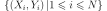
avec
et un modèle paramétré avec 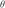 :
avec 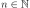, 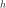 est une fonction de paramètre
à valeur dans  et vérifiant la
contrainte : .
et vérifiant la
contrainte : .
Problème P1 : Factorisation de matrices positifs
Soit , on cherche les matrices à coefficients positifs et qui sont solution du problème d’optimisation :
Problème P1 : Optimiser un système de complétion
On suppose que l’ensemble des complétions est connu.
On souhaite ordonner cet ensemble pour obtenir l’ensemble ordonné
des complétions  qu’on considère comme une permutation
de l’ensemble de départ : .
Ce système de complétion est destiné à un des utilisateurs qui forment des recherches ou requêtes
.
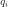 est la requête, est la fréquence associée
à cette requête. On définit l’effort demandé aux utilisateurs
par ce système de complétion :
qu’on considère comme une permutation
de l’ensemble de départ : .
Ce système de complétion est destiné à un des utilisateurs qui forment des recherches ou requêtes
.
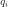 est la requête, est la fréquence associée
à cette requête. On définit l’effort demandé aux utilisateurs
par ce système de complétion :
Déterminer le meilleur système de complétion revient à trouver la permutation qui minimise 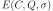.
Problème P1 : Régression
Soient deux variables aléatoires et ,
l’objectif est d’approximer la fonction
.
Les données du problème sont
un échantillon de points  et un modèle paramétré avec :math:theta` :
et un modèle paramétré avec :math:theta` :
avec ,
bruit blanc,
est une fonction de paramètre .
Problème P1 : analyse en composantes principales (ACP)
Soit  avec .
Soit ,
où les vecteurs
avec .
Soit ,
où les vecteurs  sont les colonnes de et .
On suppose également que les forment une base othonormée.
Par conséquent :
sont les colonnes de et .
On suppose également que les forment une base othonormée.
Par conséquent :

 est l’ensemble des
vecteurs
est l’ensemble des
vecteurs  projetés sur le sous-espace vectoriel
engendré par les vecteurs .
Réaliser une analyse en composantes principales, c’est trouver le
meilleur plan de projection pour les vecteurs
, celui qui maximise l’inertie de ce nuage de points,
c’est donc trouver
projetés sur le sous-espace vectoriel
engendré par les vecteurs .
Réaliser une analyse en composantes principales, c’est trouver le
meilleur plan de projection pour les vecteurs
, celui qui maximise l’inertie de ce nuage de points,
c’est donc trouver  tel que :
tel que :
(1)¶
Le terme est l’inertie du nuage de points
projeté sur le sous-espace vectoriel défini par les
vecteurs colonnes de la matrice .
Problème P1 : estimateur du maximum de vraisemblance
Soit un vecteur tel que :

On cherche le vecteur  vérifiant :
vérifiant :
Problème P2 : Optimiser un système de complétion filtré
On suppose que l’ensemble des complétions est connu.
On souhaite ordonner cet ensemble pour obtenir l’ensemble ordonné
des complétions qu’on considère comme une permutation
de l’ensemble de départ : .
On utilise aussi une fonction qui filtre les suggestions montrées
à l’utilisateur, elle ne change pas l’ordre mais peut cacher certaines suggestions
si elles ne sont pas pertinentes.
Ce système de complétion est destiné à un des utilisateurs qui forment des recherches ou requêtes
.
est la requête, est la fréquence associée
à cette requête. On définit l’effort demandé aux utilisateurs
par ce système de complétion :
Déterminer le meilleur système de complétion revient à trouver la permutation qui minimise .
Problème P2 : Prédiction
Soit et , on cherche les matrices à coefficients positifs qui sont solution du problème d’optimisation :
Problème P2 : classification
Soit l’échantillon suivant :
représente la probabilité que l’élément
appartiennent à la classe :

Le classifieur cherché est une fonction définie par :

Dont le vecteur de poids est égal à :
Propriétés¶
Problème P1 : Classification
Soit une variable aléatoire
et une variable aléatoire discrète ,
l’objectif est d’approximer la fonction .
Les données du problème sont
un échantillon de points :
avec
et un modèle paramétré avec :
avec , est une fonction de paramètre
à valeur dans et vérifiant la
contrainte : .
Problème P1 : Factorisation de matrices positifs
Soit , on cherche les matrices à coefficients positifs et qui sont solution du problème d’optimisation :
Problème P1 : Optimiser un système de complétion
On suppose que l’ensemble des complétions est connu.
On souhaite ordonner cet ensemble pour obtenir l’ensemble ordonné
des complétions qu’on considère comme une permutation
de l’ensemble de départ : .
Ce système de complétion est destiné à un des utilisateurs qui forment des recherches ou requêtes
.
est la requête, est la fréquence associée
à cette requête. On définit l’effort demandé aux utilisateurs
par ce système de complétion :
Déterminer le meilleur système de complétion revient à trouver la permutation qui minimise .
Problème P1 : Régression
Soient deux variables aléatoires et ,
l’objectif est d’approximer la fonction
.
Les données du problème sont
un échantillon de points
et un modèle paramétré avec :math:theta` :
avec ,
bruit blanc,
est une fonction de paramètre .
Problème P1 : analyse en composantes principales (ACP)
Soit avec .
Soit ,
où les vecteurs
sont les colonnes de et .
On suppose également que les forment une base othonormée.
Par conséquent :
est l’ensemble des
vecteurs projetés sur le sous-espace vectoriel
engendré par les vecteurs .
Réaliser une analyse en composantes principales, c’est trouver le
meilleur plan de projection pour les vecteurs
, celui qui maximise l’inertie de ce nuage de points,
c’est donc trouver tel que :
(1)¶
Le terme est l’inertie du nuage de points
projeté sur le sous-espace vectoriel défini par les
vecteurs colonnes de la matrice .
Problème P1 : estimateur du maximum de vraisemblance
Soit un vecteur tel que :
On cherche le vecteur vérifiant :
Problème P2 : Optimiser un système de complétion filtré
On suppose que l’ensemble des complétions est connu.
On souhaite ordonner cet ensemble pour obtenir l’ensemble ordonné
des complétions qu’on considère comme une permutation
de l’ensemble de départ : .
On utilise aussi une fonction qui filtre les suggestions montrées
à l’utilisateur, elle ne change pas l’ordre mais peut cacher certaines suggestions
si elles ne sont pas pertinentes.
Ce système de complétion est destiné à un des utilisateurs qui forment des recherches ou requêtes
.
est la requête, est la fréquence associée
à cette requête. On définit l’effort demandé aux utilisateurs
par ce système de complétion :
Déterminer le meilleur système de complétion revient à trouver la permutation qui minimise .
Problème P2 : Prédiction
Soit et , on cherche les matrices à coefficients positifs qui sont solution du problème d’optimisation :
Problème P2 : classification
Soit l’échantillon suivant :
représente la probabilité que l’élément
appartiennent à la classe :
Le classifieur cherché est une fonction définie par :
Dont le vecteur de poids est égal à :
Tables¶
Théorèmes¶
Théorème T1 : Aire sous la courbe (AUC)
On utilise les notations de la définition de la Courbe ROC.
L’aire sous la courbe ROC est égale à  .
.
Théorème T1 : La factorisation de matrice est équivalente à une analyse en composantes principales
On note ,
, avec
, ,
et avec .
On suppose que les matrices
sont solution du problème d’optimisation
.
On considère que la matrice est un ensemble de
points dans dans un espace vectoriel de dimension .
On suppose .
La matrice définit un hyperplan identique à celui défini
par les vecteurs propres associés aux
plus grande valeurs propres de la matrice
où  est la transposée de .
est la transposée de .
Théorème T1 : M”, ordre et sous-ensemble
Soit une requête de l’ensemble de complétion
ordonnées selon .
Si cet ordre vérifie :
(1)¶
On note l’ensemble :
alors :
Théorème T1 : Régression linéaire après Gram-Schmidt
Soit une matrice  avec
. Et un vecteur .
D’après l”algorithme de Gram-Schmidt,
il existe deux matrices telles que
ou .
et .
La matrice T est triangulaire supérieure
et vérifie (
est la matrice identité). Alors
.
avec
. Et un vecteur .
D’après l”algorithme de Gram-Schmidt,
il existe deux matrices telles que
ou .
et .
La matrice T est triangulaire supérieure
et vérifie (
est la matrice identité). Alors
.
 est la solution du problème d’optimisation
.
est la solution du problème d’optimisation
.
Théorème T1 : [Farago1993]_ 1
Les notations sont celles de l’algorithme précédent.
Il retourne le plus proche voisin de
 inclus dans
inclus dans  .
Autrement dit, .
.
Autrement dit, .
Théorème T1 : convergence de la méthode de Newton
Soit une fonction continue 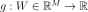
de classe  .
On suppose les hypothèses suivantes vérifiées :
.
On suppose les hypothèses suivantes vérifiées :
H1 : 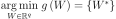 est un singleton
H2 :
![\forall\varepsilon>0, \; \underset{\left| W-W^{\ast}\right|
>\varepsilon}{\inf}\left[ \left( W-W^{\ast}\right) ^{\prime}.\nabla
g\left( W\right) \right] >0](_images/math/cd5c8eeb11c1af5fd5a8957eef0148c34c6fbcbe.svg)
H3 : 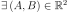 tels que 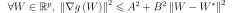
H4 : la suite
 vérifie,
vérifie,
 et
et  ,
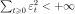
,
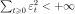
Alors la suite construite de la manière suivante
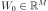,  :
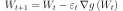
vérifie 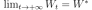.
:
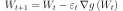
vérifie 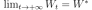.
Théorème T1 : convergence des k-means
Quelque soit l’initialisation choisie, la suite  construite par l’algorithme des k-means
converge.
construite par l’algorithme des k-means
converge.
Théorème T1 : convexité des classes formées par une régression logistique
On définit l’application
qui associe la plus grande coordonnée
.
A est une matrice ,
B est un vecteur de  ,
c est le nombre de parties.
L’application f définit une partition convexe
de l’espace vectoriel .
,
c est le nombre de parties.
L’application f définit une partition convexe
de l’espace vectoriel .
Théorème T1 : densité des réseaux de neurones (Cybenko1989)
[Cybenko1989]
Soit  l’espace des réseaux de neurones à
entrées et sorties, possédant une couche cachée dont la
fonction de seuil est une fonction sigmoïde
l’espace des réseaux de neurones à
entrées et sorties, possédant une couche cachée dont la
fonction de seuil est une fonction sigmoïde
 ,
une couche de sortie dont la fonction de seuil est linéaire
Soit
,
une couche de sortie dont la fonction de seuil est linéaire
Soit  l’ensemble des fonctions continues de
l’ensemble des fonctions continues de
 avec
compact muni de la norme
Alors est dense dans .
avec
compact muni de la norme
Alors est dense dans .
Théorème T1 : distance d’édition
Soit et les fonctions définies respectivement par
(1) et (2), alors :
est une distance sur
Théorème T1 : loi asymptotique des coefficients
Soit un réseau de neurone défini par perceptron
composé de :
une couche d’entrées
une couche cachée dont les fonctions de transfert sont sigmoïdes
une couche de sortie dont les fonctions de transfert sont linéaires
Ce réseau sert de modèle pour la fonction
dans le problème de régression
avec un échantillon ,
les résidus sont supposés normaux.
La suite  définie par (2) vérifie :
définie par (2) vérifie :

Et le vecteur aléatoire  vérifie :
vérifie :

Où la matrice 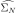 est définie par (2).
end{xtheorem}
Théorème T1 : résolution de l’ACP
Les notations utilisées sont celles du problème de l”ACP. Dans ce cas :
(2)¶
De plus est l’espace vectoriel engendré par les
vecteurs propres de la matrice
 associées aux
valeurs propres de plus grand module.
associées aux
valeurs propres de plus grand module.
Théorème T1 : résolution du problème du maximum de vraisemblance
La solution du problème du maximum de vraisemblance est le vecteur :

Théorème T1 : simulation d’une loi quelconque
Soit une fonction de répartition de densité
vérifiant , soit  une variable
aléatoire uniformément distribuée sur alors
est variable aléatoire de densité .
une variable
aléatoire uniformément distribuée sur alors
est variable aléatoire de densité .
Théorème T2 : Borne supérieure de l’erreur produite par k-means++
On définit l’inertie par
 .
Si
.
Si  définit l’inertie optimale alors
.
définit l’inertie optimale alors
.
Théorème T2 : [Farago1993]_ 2
Les notations sont celles du même algorithme.
On définit une mesure sur l’ensemble ,
désigne la boule de centre
et de rayon 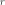,
une variable aléatoire, de plus :

On suppose qu’il existe et une fonction tels que :
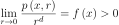
La convergence doit être uniforme et presque sûre.
On note également le nombre de calculs de
dissimilarité effectués par l’algorithme
où est le nombre d’élément de ,
désigne toujours le nombre de pivots, alors :
Théorème T2 : rétropropagation
Cet algorithme s’applique à un réseau de neurones vérifiant la définition du perceptron.
Il s’agit de calculer sa dérivée par rapport aux poids. Il se déduit des formules
(3), (4), (5) et (7)
et suppose que l’algorithme de propagation a été préalablement exécuté.
On note  ,
,  et
et
 .
.
Initialisation

Récurrence


Terminaison


Théorème T2 : simulation d’une loi de Poisson
On définit une suite infinie de loi
exponentielle de paramètre  . On définit ensuite
la série de variables aléatoires
. On définit ensuite
la série de variables aléatoires  et enfin .
Alors la variable aléatoire suit une loi
de Poisson de paramètre .
et enfin .
Alors la variable aléatoire suit une loi
de Poisson de paramètre .
Théorème T2 : sélection d’architecture
Les notations utilisées sont celles du théorème
loi asymptotique des coefficients.
est un réseau de neurones
de paramètres . On définit la constante  ,
en général puisque
,
en général puisque
 si .
si .
Initialisation
Une architecture est choisie pour le réseau de neurones incluant un nombre M de paramètres.
Apprentissage
Le réseau de neurones est appris. On calcule les nombre et matrice
et .
La base d’apprentissage contient exemples.
Test
in Sélection


 est supprimée ou le poids
est supprimée ou le poids  est maintenue à zéro.
est maintenue à zéro.Théorème T3 : somme de loi exponentielle iid
Soit  variables aléatoires indépendantes
et identiquement distribuées de loi alors la
somme suit une loi .
variables aléatoires indépendantes
et identiquement distribuées de loi alors la
somme suit une loi .